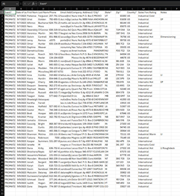
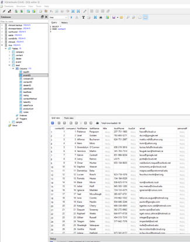
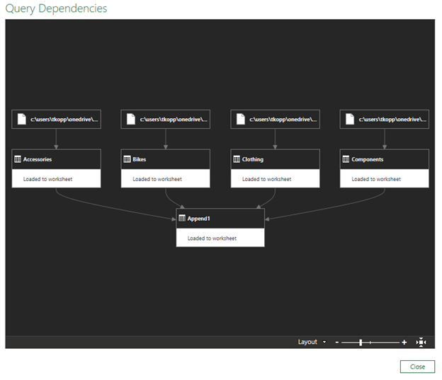
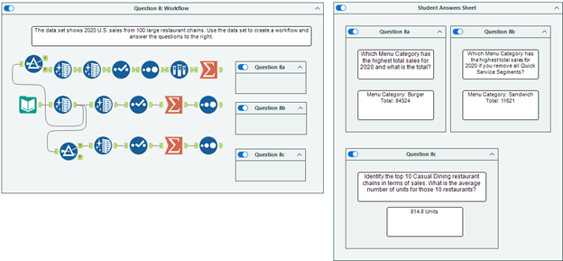

This course focuses on the critical processes required to move, clean, and integrate data from various sources into centralized systems for business intelligence. I gained experience building reliable data pipelines while ensuring data quality, security, and strict alignment with organizational reporting requirements.
Analyzing the benefits and challenges of merging disparate data sources into a single, cohesive source of truth.
Labeling diverse data types and utilizing logical functions to reformulate unformatted text files to meet target system requirements.
Applying security protocols to protect sensitive data and determining appropriate load frequencies for recurring data updates.
Practiced converting .xlsx source files to .csv format to facilitate data imports into an SQLite database environment.


Combining data from multiple disparate sources into a unified dataset for analysis.

Built complex workflows in Alteryx to automate data preparation and answer specific business intelligence questions.

← Return to Academics